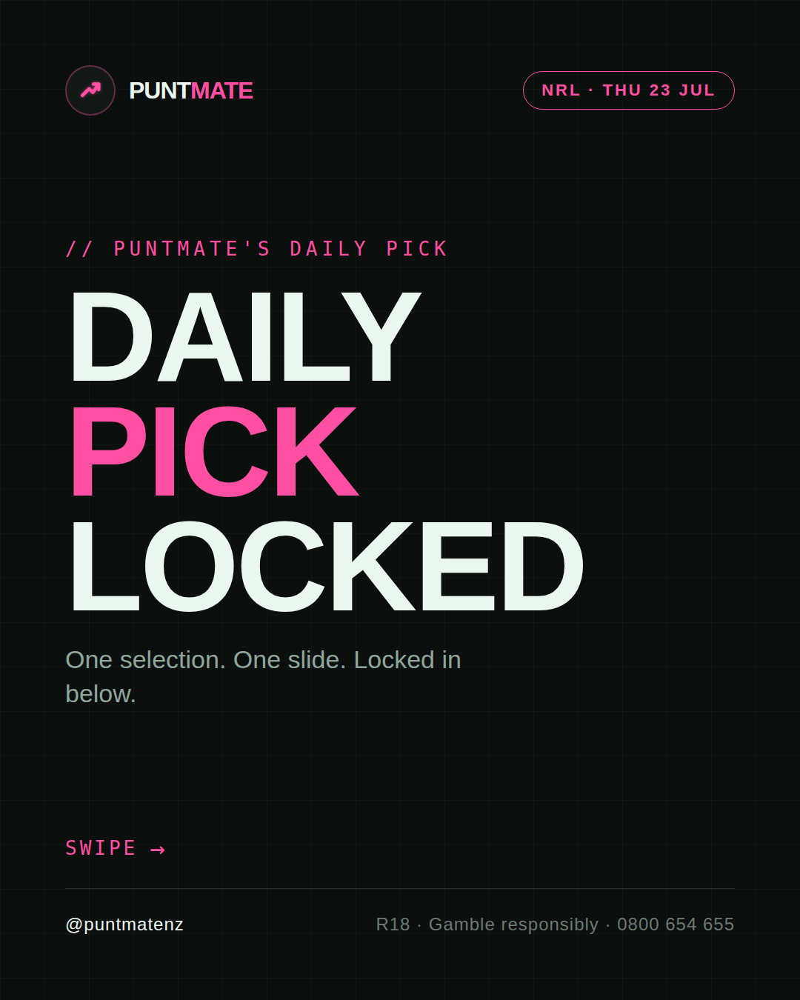
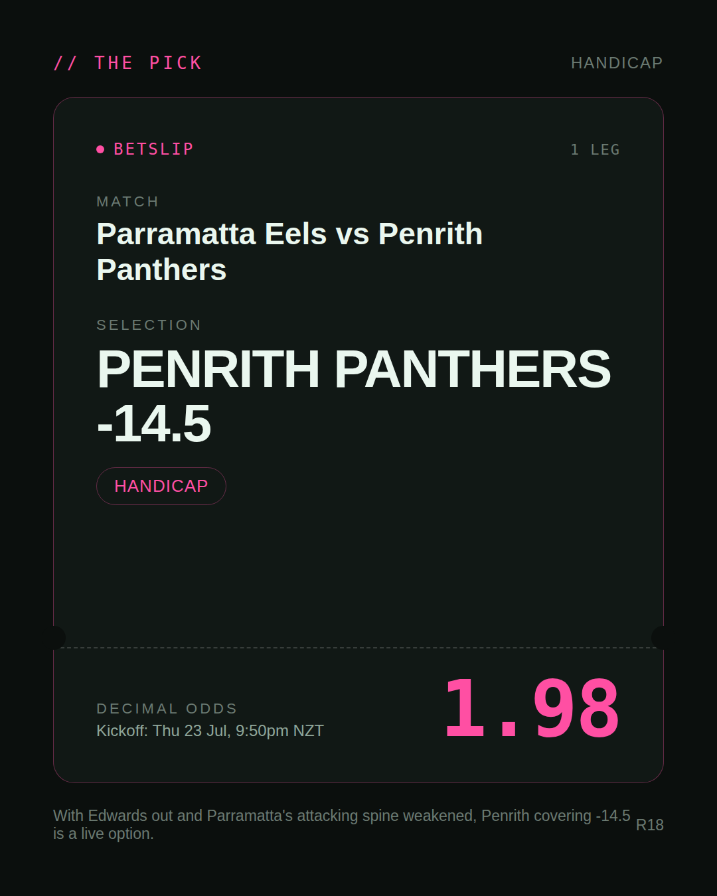
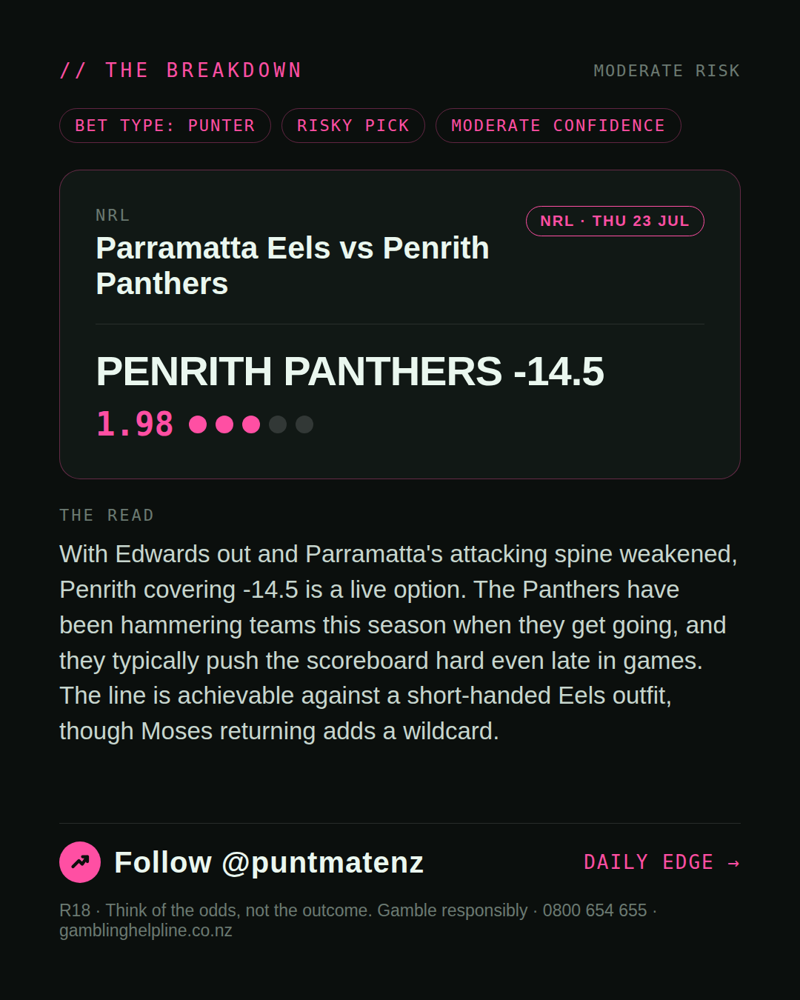
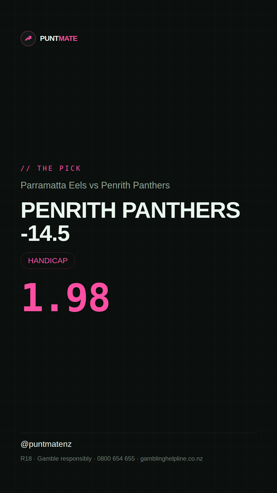

*🎯 PUNTMATE NZ — NRL* 🏟 Parramatta Eels vs Penrith Panthers *PICK:* PENRITH PANTHERS -14.5 *ODDS:* 1.98 (Handicap) *BET TYPE: PUNTER* _With Edwards out and Parramatta's attacking spine weakened, Penrith covering -14.5 is a live option. The Panthers have been hammering teams this season when they get going, and they typically push the scoreboard hard even late in games. The line is achievable against a short-handed Eels outfit, though Moses returning adds a wildcard._ ────────────────── 📲 Join Telegram for daily picks R18 · Gamble responsibly · Problem Gambling Foundation NZ: 0800 664 262
🎯 NRL — Parramatta Eels vs Penrith Panthers PENRITH PANTHERS -14.5 @ 1.98 (Handicap) BET TYPE: PUNTER Solid touch here. Not a lock, but the value's real and the form backs it up. With Edwards out and Parramatta's attacking spine weakened, Penrith covering -14.5 is a live option. The Panthers have been hammering teams this season when they get going, and they typically push the scoreboard hard even late in games. The line is achievable against a short-handed Eels outfit, though Moses returning adds a wildcard. Follow for daily value picks → @puntmatenz Problem Gambling Foundation NZ: 0800 664 262 #PuntmateNZ #SportsBetting #NZTAB #NRL
| has_pick | True |
| pick_id | 2026-07-22_Parramatta_Eels_vs_Penrith_Panthers |
| run_id | 29958446970 |
| generated_at | 2026-07-22T21:16:40.057504+00:00 |
| post_date | 2026-07-22 |
| match | Parramatta Eels vs Penrith Panthers |
| sport | rugbyleague_nrl |
| sport_label | NRL |
| market | Handicap |
| selection | PENRITH PANTHERS -14.5 |
| odds | 1.98 |
| bet_type | PUNTER_BET |
| bet_type_label | BET TYPE: PUNTER |
| bet_type_reason | Solid touch here. Not a lock, but the value's real and the form backs it up. With Edwards out and Parramatta's attacking spine weakened, Penrith covering -14.5 is a live option. The Panthers have been hammering teams this season when they get going, and they typically push the scoreboard hard even late in games. The line is achievable against a short-handed Eels outfit, though Moses returning adds a wildcard. |
| classification | RISKY_PICK |
| risk | RISKY_PICK |
| confidence | MODERATE |
| confidence_label | MODERATE |
| final_explanation | With Edwards out and Parramatta's attacking spine weakened, Penrith covering -14.5 is a live option. The Panthers have been hammering teams this season when they get going, and they typically push the scoreboard hard even late in games. The line is achievable against a short-handed Eels outfit, though Moses returning adds a wildcard. |
| public_caution | Keep this one light — the value's there but so is the uncertainty. |
| theme | night |
| carousel_paths | ['data/review/2026-07-22_Parramatta_Eels_vs_Penrith_Panthers/cover.png', 'data/review/2026-07-22_Parramatta_Eels_vs_Penrith_Panthers/tip.png', 'data/review/2026-07-22_Parramatta_Eels_vs_Penrith_Panthers/breakdown.png'] |
| carousel_urls | ['https://raw.githubusercontent.com/kingofthecastle24/puntmate/main/data/cards/2026-07-22_Parramatta_Eels_vs_Penrith_Panthers_night_1_cover.png', 'https://raw.githubusercontent.com/kingofthecastle24/puntmate/main/data/cards/2026-07-22_Parramatta_Eels_vs_Penrith_Panthers_night_2_tip.png', 'https://raw.githubusercontent.com/kingofthecastle24/puntmate/main/data/cards/2026-07-22_Parramatta_Eels_vs_Penrith_Panthers_night_3_breakdown.png'] |
| story_path | data/review/2026-07-22_Parramatta_Eels_vs_Penrith_Panthers/story.png |
| story_url | https://raw.githubusercontent.com/kingofthecastle24/puntmate/main/data/cards/2026-07-22_Parramatta_Eels_vs_Penrith_Panthers_night_story.png |
| intended_platforms | ['telegram', 'instagram_feed', 'instagram_story', 'facebook'] |
| workflow_state | GENERATED |
| has_punter_multi | False |
| has_gambler_multi | False |
| has_degenerate_multi | False |